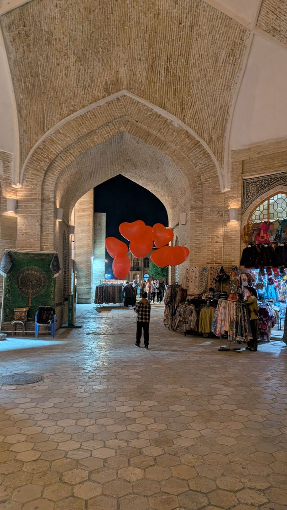
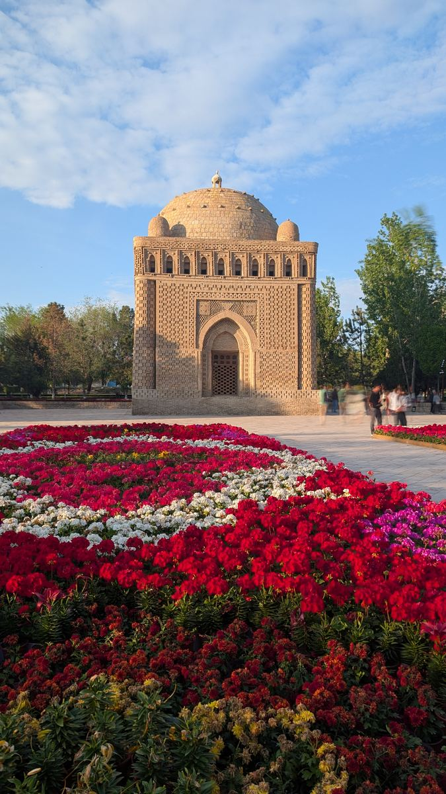
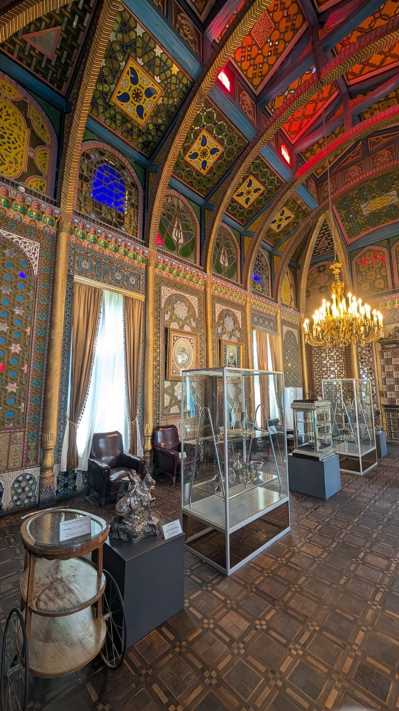

Bukhara and Samarkand, told the way a local would tell them.
I'm Aziz — I've been walking these streets my whole life, and I'd rather show you the well my grandmother still fetches water from than recite a plaque.

I'm Aziz — I've been walking these streets my whole life, and I'd rather show you the well my grandmother still fetches water from than recite a plaque.
"I grew up three streets from the Kalyan Minaret. I still can't walk past Chashma Ayub without stopping — so when I guide, we stop too."
[Placeholder bio — replace with Aziz's own words.] I've been guiding travelers through Bukhara and Samarkand for over a decade, and what I love most hasn't changed: watching someone stand in Lyabi-Hauz at dusk and finally understand why the mulberry trees are older than most countries. I'm not interested in giving you dates you'll forget by dinner. I want you to leave knowing which teahouse actually serves the good plov, and why.

Bukhara trading dome — swap for a workshop-stop photo when availablePoi Kalyan, the Ark Fortress, Lyabi-Hauz, and the madrasahs in between — with a stop inside a working pottery or wood-carving studio so you see the old town's crafts still being made, not just displayed.

Ismail Samani Mausoleum, golden hour — swap for a group/sunset photo when availableThe essential first look at Bukhara, built for first-timers. We meet at the Nodir Devonbegi Khanaka and cover the old town's landmarks as the light turns gold. Pay what you feel it was worth.
I also guide in Samarkand — the Registan at the right hour is unlike anywhere else in the country. Exact itinerary and booking link going up soon; message me directly in the meantime.
Placeholder — confirm details with Aziz before publishing.
Have less usual time, a specific interest, or a family group? I put together private itineraries around what you actually want to see — just tell me what you're after.
No memorized plaques recited word for word — I tell you what I'd tell a friend, including the parts guidebooks leave out.
We step inside working studios — potters, wood-carvers, embroiderers — so craft isn't something you see behind glass.
Where the plov is actually good, what a fair price looks like, which shop isn't marking up for tourists — the things locals know.
Poi Kalyan by night

Painted ceiling, old town museum[Placeholder — pull a real quote from GetYourGuide once available.] Aziz didn't just show us Bukhara, he explained why every corner of it looked the way it did.
— Placeholder name, Placeholder country · GetYourGuide
[Placeholder quote.] The workshop stop was the best part — we watched a potter work who'd learned from his own father.
— Placeholder name, Placeholder country · GetYourGuide
[Placeholder quote.] He gave us a place to eat that wasn't in any guidebook, and it was the best meal of the whole trip.
— Placeholder name, Placeholder country · Freetour
For custom tours, dates, or questions about Samarkand, message me directly — it's usually the fastest way.